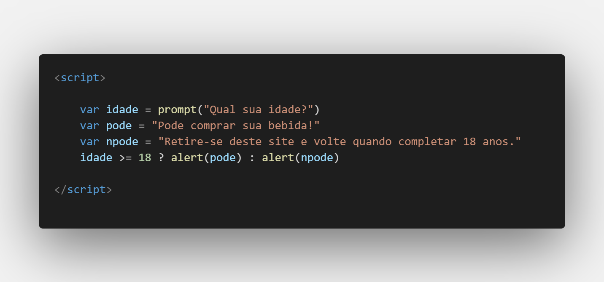
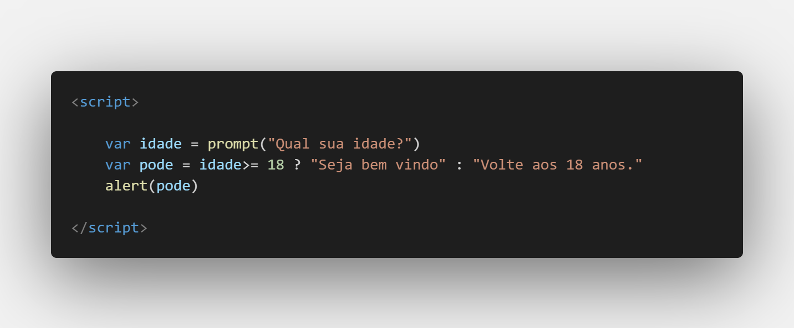

Aula 14/26 - Operador Ternário
O operador ternário em JavaScript é uma forma concisa de expressar uma estrutura condicional usando uma única linha de código. Ele permite que você tome uma decisão com base em uma condição e retorne um valor ou execute uma expressão diferente, dependendo se a condição é verdadeira ou falsa. O operador ternário é representado pelo símbolo ? e é frequentemente chamado de "operador condicional ternário".
Aqui está a sintaxe básica do operador ternário:
condicao ? valor_se_verdadeiro : valor_se_falso;
- condicao: Uma expressão que será avaliada como verdadeira ou falsa.
- valor_se_verdadeiro: O valor que será retornado se a condição for verdadeira.
- valor_se_falso: O valor que será retornado se a condição for falsa.
exemplos:


No primeiro exemplo o valor que será dado para verdadeiro ou falso está disposto antes como variáveis, já no segundo, simplificamos a formula para que o operador ternário já retorne uma variável que servirá como resposta.
O operador ternário é útil para simplificar condicionais simples que envolvem apenas duas opções. No entanto, é importante usá-lo com moderação, pois seu uso excessivo pode prejudicar a legibilidade do código quando as expressões condicionais ficam muito complexas.